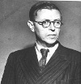

Varoluşçuluğun babası Jean-Paul Sartre (1905–1980) kurgusal eserleri, filmleri, politik aktivizmi, aşk ilişkileri ve provokatif felsefesi ile Batı Avrupa’da son derece önemli bir yere sahiptir. 1964 yılında Nobel edebiyat ödülünü kazanmış olmasına rağmen ödülü reddederek gerçek bir yazarın böyle şeylerden uzak durması gerektiğini söylemiştir.

Sartre, Paris’te doğdu. Felsefe doktorasını Paris’te tamamladı. Ömrü boyunca sürecek bir ilişkisinin olduğu Simone de Beauvoir (1908–1986) ile de burada tanıştı. İki yıl Almanya’da çalıştıktan sonra yeniden Fransa’ya dönüp 1938’de yayımlanan Nausea (Bulantı) isimli varoluşçu romanını yazmaya başladı.
II. Dünya Savaşı sırasında Fransız ordusuna alındı, fakat Almanlar’a esir düştü. Dokuz ay Nazi esir kampında kaldı. Daha sonra sağlık sorunları nedeniyle serbest bırakıldı - üç yaşından beri bir gözü görmüyordu. Savaşın kalan döneminde Nazi karşıtı entelektüellerin çıkardığı yeraltı dergilerine ve organizasyonlara katkıda bulundu. Komünizmi benimsedi. 1943 yılında varoluşçuluğun temel metinlerinden biri olan Being and Nothingness (Varlık ve Hiçlik) isimli eserini yazdı.
Varoluşçuluk, özellikle Friedrich Nietzsche (1844–1900) gibi Avrupalı filozoflardan etkilenmişti. Plato’dan (429–347 BC) beri gelen klasik Batı felsefesini reddediyordu. İsmini, ünlü “Varoluş özden önce gelir,” sloganından almıştı. Varoluşçular insanların kendi hayatlarını yaratabildiklerini ve onları tanımlayan hiçbir metafizik ya da dini formun olmadığını savunuyordu.
II. Dünya Savaşı’ndan sonra Sartre ve Albert Camus (1913–1960) en önemli iki Fransız varoluşçusu olarak isim yaptılar. Sartre muhalif politik hareketlere katılımı ve Beauvoir ile olan ilişkisi nedeniyle Fransız kültürünün temel direklerinden biri haline geldi. Cezayir’deki Fransız sömürgeciliğine muhalefet etti. Vietnam Savaşı’na karşı çıktı. 1956 yılında Sovyet güçleri Macaristan’ı işgal edince onlara karşı da tavır aldı.
Sartre genç hayranları ile ilişkiler yaşadı. Aynı anda dört ya da beş metresinin olduğu dönemler olmuştu. Yaşadıklarını samimi mektuplarla Beauvoir’a anlattı. Zira ona tekeşlilik değilse bile dürüstlük sözü vermişti. Yetmiş dört yaşında akciğer enfeksiyonundan ölene kadar iki filozof birbirinden kopmadı.
Ek Bilgiler
1- 1948 yılında Sartre’ın eserleri Katolik kilisesi tarafından yasaklandı.
2- En ünlü sözlerinden biri “No Exit” (Çıkış Yok / 1944) oyununda yer alan “Cehennem diğer insanlardır,”dır.
3- Nobel almadan önce İsveç’teki Nobel Enstitüsü’ne mektup yazdı. Mektubunda değerlendirme dışı kalmak istediğini söyledi. Ancak mektubu hiçbir zaman açılmadı.